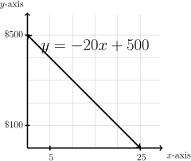
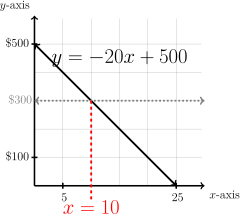
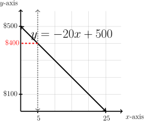
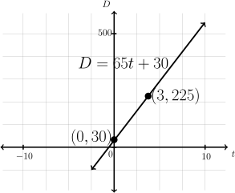

Subsection3.C.1Linear Models
Now that you have an understanding of lines, we will consider linear models. A linear model is a line that is connected to a real-world situation or data. What does this mean?
Recall that when we write the slope-intercept equation for a line:
\begin{gather*}
y=mx+b
\end{gather*}
\(y\) represents the dependent variable (sometimes called the "response" variable) and \(x\) represents the independent variable (sometimes called the "predictor"). Plugging in a particular value of \(x\) gives, or "predicts," a corresponding value for the response \(y\text{.}\) The value of the slope \(m\) of the line represents the estimated change in the response variable \(y\) for a one-unit change in the predictor variable \(x\text{.}\) Finally, the value of \(b\)(the \(y\)-intercept) is the value of the response \(y\) when the predictor \(x\) is zero. To summarize:
- \(y\) is the response variable (it responds to changes in \(x\))
- \(x\) is the predictor variable
- \(m\) represents the estimated change in the response \(y\) for a one-unit change in the predictor \(x\)
- \(b\) is the value of the response \(y\) when the predictor \(x=0\)
Recall that points in the plane are denoted:
\begin{gather*}
(x,y)=(horizontal\;\#, vertical\;\#)
\end{gather*}
Now, we have another way to look at what a point represents:
\begin{gather*}
(x,y)=(independent, dependent) =(predictor, response)
\end{gather*}
Consider some examples of linear models.
Example3.C.1A Linear Model
Theo saved \(\$500\) from his summer job for spending money at college this fall. If he spends about \(\$20\) per week, how long will his money last?
Since the rate of change is a constant \(-20\) dollars per week, the model should be a line. The vertical intercept is how much he has at the beginning of the fall semester when zero weeks have passed: \(500\text{.}\) The linear model is
\begin{gather*}
y=-20x+500.
\end{gather*}
The predictor (or independent variable) is
\begin{gather*}
x= \text{ number of weeks}
\end{gather*}
and the response (or dependent variable) is
\begin{gather*}
y= \text{ amount of money left}
\end{gather*}
We want to know how many weeks it will take until no money is left, when \(y=0\text{.}\)
\begin{align*}
0\amp= -20x+500 \amp\amp\text{Add }20x\text{ to both sides.}\\
20x\amp= 500 \amp\amp\text{Divide both sides by 20}\\
x\amp= 25 \amp\amp\\
\text{The money will be gone in }\amp 25 \text{ weeks}\amp\amp\text{Our Solution}\checkmark
\end{align*}
Example3.C.2Use a Graph to Determine a Solution
Consider Example 3.C.1. Use the graph of the model to determine (a) when \(\$300\) remains and also (b) how much money remains after \(5\) weeks.
Reading the graph of an equation is sometimes faster than computing an answer from the equation.
The graph of the model from Example 3.C.1 is given at the right.
\begin{gather*}
y=-20x+500
\end{gather*}

(a) Use the graph of the model to determine when \(\$300\) remains.
Consider a horizontal line at \(y=300\) and note that the lines intersect at \(x=10.\)
\(\$300\) remains after \(10\) weeks.\(\checkmark\)

(b) Use the graph of the model to determine how much money remains after \(5\) weeks.
Consider a vertical line at \(x=5\) and note that the lines intersect at \((5,400).\)
\(\$400\) remains after \(5\) weeks.\(\checkmark\)

When making a model, we are not restricted to the using \(x\) and \(y\text{.}\) Using variables that tie in with what they represent make the mathematical model easier to understand.
Example3.C.3Road Trip! Determine Slope and Intercept of Given Model
Suppose you are driving from Caldwell to LaGrande, OR to watch the Yotes play a game against Eastern Oregon University. When you reach Ontario, OR (which is 30 miles into the drive) you are able to set your cruise control at 65 miles per hour (mph) for the remainder of the trip. The linear equation \(D=65t + 30\) represents your distance from Caldwell \(t\) hours after turning on the cruise control. Notice when \(t=0\text{,}\) your distance \(D=30\) which corresponds to you being 30 miles from Caldwell (and in Ontario).
First, determine the slope and intercept for the model. Recall the slope-intercept form of a line (3.B.3):
\begin{gather*}
y=mx+b
\end{gather*}
Thus the linear equation
\begin{gather*}
D=65t+30
\end{gather*}
indicates the response is \(D=\) your distance from Caldwell, and the predictor is \(t=\) the time you have had the cruise on. Thus
\begin{align*}
\text{slope }=65\text{ and intercept}=30\amp\amp\amp\text{Our Solution}\checkmark
\end{align*}
Example3.C.4Road Trip! Slope in Context
Continue with Example 3.C.3. Recall the linear model \(D=65t + 30\) represents your distance \(D\) (in miles) from Caldwell \(t\) hours after cruise. Describe what the slope means.
Since
\begin{align*}
m=65\text{ mph is positive}\amp\amp\amp\text{Recall slope is }
\dfrac{\text{rise}}{\text{run}}=\frac{\text{change in } D\text{ miles}}{\text{change in } t\text{ hour}}
\end{align*}
- Your distance increases at a rate of \(65\) miles for each hour using cruise. This means for each additional hour driving using cruise, the model predicts you will travel an additional \(65\) miles.
- For an additional \(2\) hours driving using cruise, the model predicts you will travel an additional \((65)(2) = 130\) miles.\(\checkmark\)
Example3.C.5Road Trip! Solve for a Predictor Given a Response
Continue with Example 3.C.3. Recall the linear model \(D=65t + 30\) represents your distance \(D\) (in miles) from Caldwell \(t\) hours after using cruise. How many hours after setting your cruise control will you be \(225\) miles from Caldwell?
Recall that the response variable \(D\) represents the distance from Caldwell \(t\) hours after using cruise. When is \(D=225\text{?}\) Write an equation to model the problem:
\begin{align*}
225\amp =65t+30\amp\amp\text{Solve for \(t\): subtract \(30\) from both sides}\\
195\amp =65t\amp\amp\text{Divide both sides by \(65\)}\\
3\amp =t\amp\amp\text{State what this means in context}\
\end{align*}
After \(t=3\) hours of cruise control you are \(225\) miles from Caldwell.\(\checkmark\)

The graph of the linear model demonstrates the \(D\)-intercept of \(30\) miles,
increasing slope of \(65\) mph
and distance of \(225\) miles when the time is \(3\) hours. \(\checkmark\)
Example3.C.6Penguins! Determine Slope and Intercept of Given Model
A study of king penguins looked for a relationship between how deep the penguins dive to seek food and how long they stay underwater. The data from the study produced the linear model \(DD = 0.0072D + 3\text{,}\) where \(DD\) represents the dive duration in minutes (min) and \(D\) represents the depth in meters (m).
First, determine the slope and intercept for the model. Recall the slope-intercept form of a line (3.B.3):
\begin{gather*}
y=mx+b
\end{gather*}
Thus the linear equation
\begin{gather*}
DD=0.0072D+3
\end{gather*}
indicates the response is \(DD=\) the dive duration (min), and the predictor is \(D=\) the depth (m). Thus
\begin{align*}
\text{slope }=0.0072\text{ and intercept}=3\amp\amp\amp\text{Our Solution}\checkmark
\end{align*}
Example3.C.7Penguins! Slope in Context
Continue with Example 3.C.6. Recall the linear model \(DD = 0.0072D + 3\text{,}\) where \(DD\) represents the dive duration in minutes (min) and \(D\) represents the depth in meters (m). Describe what the slope means.
Since
\begin{align*}
m=0.0072\text{ min/m is positive}\amp\amp\amp\text{Recall slope is }
\dfrac{\text{rise}}{\text{run}}=\frac{\text{change in } DD\text{ min}}{\text{change in } D\text{ m}}
\end{align*}
- The dive duration increases at a rate of \(0.0072\) minute for each additional meter in depth.
- For each additional meter in diving depth the model predicts a penguin remains under water an additional \(0.0072\) minute.
- For each additional \(100\) meters in diving depth the model predicts a penguin remains under water an additional \((0.0072)(100)=0.72\) minute. Since there are \(60\) seconds per minute, this is \((0.72)(60)\approx 43(0.72)(60)\approx 43\) seconds.\(\checkmark\)
Example3.C.8Penguins! Determine Response Given a Predictor
Continue with Example 3.C.6. Recall the linear model \(DD=0.0072D+3\text{,}\) where \(DD\) represents the dive duration in minutes (min) and \(D\) represents the depth in meters (m). According to the model, how long does a typical dive to a depth of \(300\) meters last?
Recall the response variable \(DD\) represents the dive duration (min) at a depth of \(D\) meters. Note we are given a depth \(D\) and asked to determine the duration for that depth. When is \(D=300\text{?}\) Write an equation to model the problem:
\begin{align*}
DD\amp =0.0072D+3\amp\amp\text{Plug the given depth \(D=300\) into the model}\\
DD\amp =0.0072(300)+3\amp\amp\text{Simplify}\\
DD\amp =5.16\amp\amp\text{State what this means in context}\
\end{align*}
The dive duration is predicted to be \(5.16\) minutes for a depth of \(300\) meters.\(\checkmark\)
Often researchers record observations over time and use a linear model to represent the situation. Consider some examples.
Example3.C.9Money! Data Points
In 1980, the gross domestic product (GDP) of the United States was \(3\) trillion dollars. In 1990 it was \(6\) trillion dollars. Let the predictor \(t\) denote time and the response \(GDP\) denote the GDP (in trillions). Since the first given observation is from 1980, let \(t=0\) correspond to the year 1980. Identify points that represent the data.
Since the predictor \(t=0\) corresponds to the year 1980 and the response is \(GDP=\) GDP (trillion dollars), the values
\begin{align*}
t=0\text{, }GDP=3\amp\amp\amp\text{correspond to the year 1980 with a GDP of
\(\$3\) trillion}
\end{align*}
Since points in the plane are written \((x,y)=(predictor, response)=(t,GDP)\) we have
\begin{align*}
(0,3)\amp\amp\amp\text{corresponds to the year 1980 with a GDP of
\(\$3\) trillion}\\
(10,6)\amp\amp\amp\text{corresponds to the year 1990 (ten years after 1980)}\\
\amp\amp\amp\text{with a GDP of
\(\$6\) trillion}\checkmark
\end{align*}
Example3.C.10Money! Model Data
Continue with the GDP Example 3.C.9. Determine a linear model for the data points \((0,3)\) and \((10,6).\)
First determine the slope. Recall from Section 3.B, to determine the slope between \((0,3)\) and \((10,6)\) we first identify \(t_1,GDP_1,t_2,GDP_2\text{.}\)
\begin{align*}
(t_1,GDP_1)\amp =(0,3)\text{ and}\\
(t_2,GDP_2)\amp =(10,6) \amp\amp\text{Use slope formula \(m=\dfrac{\text{change in GDP}}{\text{change in time}}=\dfrac{GDP_2-GDP_1}{t_2-t_1}\)}\\
m\amp =\dfrac{6-3}{10-0}\amp\amp \text{Simplify}\\
m\amp =\dfrac{3}{10}=.3\amp\amp\amp
\end{align*}
Now find the \(GDP\)-intercept, \(b\text{.}\) Since \((0,3)\) is the value of \(GDP\) when \(t=0\) the \(GDP\)-intercept is \(b=3\text{.}\) Putting this all together, we have
\begin{align*}
GDP\amp =mt+b\amp\amp\text{The form of the linear model}\\
GDP\amp =0.3t+3\amp\amp\text{Our Solution}\checkmark
\end{align*}
Example3.C.11Money! Solve for a Predictor Given a Response
Continue with the GDP Example 3.C.9. Use the linear model to determine the year when the GDP will reach \(\$13.5\) trillion.
Recall the response variable \(GDP\) represents the GDP (in trillions of dollars) at \(t=\) time (in years after 1980). Note we are given a GDP and asked to determine the corresponding year. When will \(GPD=13.5\text{?}\) Write an equation to model the problem:
\begin{align*}
GDP\amp =.3t+3\amp\amp\text{Plug the given \(GDP=13.5\) into the model}\\
13.5\amp =.3t+3\amp\amp\text{This is an equation to model the problem}\\
\amp\amp\amp\text{Solve for \(t\)}\\\
\underline{-3}\amp\underline{\phantom{12345}-3}\amp\amp\text{Subtract \(3\) from both sides}\\
10.5\amp =.3t\amp\amp\text{Divide both sides by \(.3\)}\\
35\amp =t\amp\amp\text{Recall \(t\) is years after 1980}\\
1980+35\amp =2015\amp\amp\text{State what this means in context}
\end{align*}
Using the linear model, the GDP will be \(\$13.5\) trillion in the year 2015\(\checkmark\)
Example3.C.12Copies: Data Points
An advertiser goes to a printer and is charged \(\$47\) for \(100\) copies of one flyer and \(\$63\) for \(259\) copies of another flyer. Let the predictor \(n\) denote the number of copies and the response \(C\) denote the cost. Identify points that represent the data.
Since the predictor is \(n\) the number of copies and the response is \(C\) the cost in dollars, the values
\begin{align*}
n=100\text{, }C=47\amp\amp\amp\text{corresponds to the cost
\(\$47\) for \(100\) copies}
\end{align*}
Since points in the plane are written \((x,y)=(predictor, response)=(n,C)\) we have
\begin{align*}
(100,47)\amp\amp\amp\text{corresponds to \(100\) copies with cost \(\$47\)}\\
(259,63)\amp\amp\amp\text{corresponds to \(259\) copies with cost \(\$63\)}\checkmark
\end{align*}
Example3.C.13Copies: Model Data
Continue with the Copies Example 3.C.12. Determine a linear model for the data points \((100,47)\) and \((259,63)\text{.}\)
First determine the slope. Recall from Section 3.B, to determine the slope between \((100,47)\) and \((259,63)\) we first identify \(n_1,C_1,n_2,C_2\text{.}\)
\begin{align*}
(n_1,C_1)\amp =(100,47)\text{ and}\\
(n_2,C_2)\amp =(259,63) \amp\amp\text{Use slope formula \(m=\dfrac{\text{change in cost}}{\text{change in copies}}=\dfrac{C_2-C_1}{n_2-n_1}\)}\\
m\amp =\dfrac{63-47}{259-100}\amp\amp \text{Simplify}\\
m\amp =\dfrac{16}{159}\amp\amp\text{(To avoid round-off error, don't convert to a decimal)}\\
C\amp =\dfrac{16}{159}n+b\amp\amp\text{We have found the slope for the model}
\end{align*}
Choose one of the points to plug into the line. We use \((100,47)=(n,C)\text{.}\) Substitute the corresponding values in for \(n=100\) and \(C=47\text{:}\)
\begin{align*}
47\amp =\dfrac{16}{159}(100)+b\amp\amp\text{Simplify}\\
47\amp =\dfrac{1600}{159}+b\amp\amp\text{Subtract \(\dfrac{1600}{159}\) from both sides}\\
47-\dfrac{1600}{159}\amp =b\amp\amp\text{Approximate \(b\) on your calculator}\\
b\amp\approx 36.9371\amp\amp\text{Write the model with the derived \(m\) and \(b\)}\\
C\amp =\dfrac{16}{159}n+36.9371\amp\amp\text{Our Solution}\checkmark
\end{align*}
Decimal Precision in WeBWorK
It is generally a good idea to maintain \(3\) to \(5\) decimals of accuracy when submitting answers.
Note: For dollar amounts, only two decimal places will be accepted. It's still a good idea to use more accuracy when calculating your answer, then round to the nearest penny.